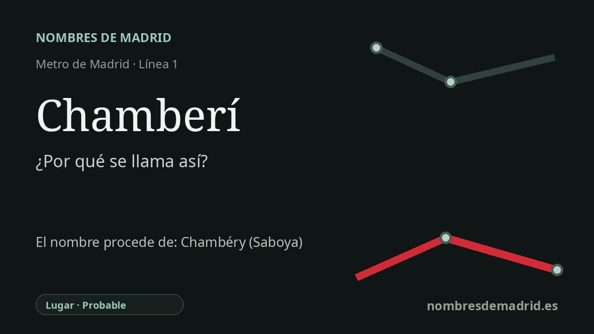

Publicado el · Investigación de Nombres de Madrid · Cómo verificamos cada origen · 8 fuentes consultadas
Respuesta rápida
La estación de Chamberí toma su nombre de la plaza de Chamberí y del distrito que la rodea. El topónimo madrileño suele vincularse con Chambéry, en Saboya, aunque la transmisión histórica está discutida.
La historia del nombre
La estación de Chamberí se llama así por el lugar situado sobre ella: la plaza de Chamberí y el distrito que la rodea. La documentación histórica de Metro de Madrid sitúa la estación original bajo la plaza, en la primera línea entre Cuatro Caminos y Sol, inaugurada el 17 de octubre de 1919.
El nombre anterior que hay detrás de la estación no es de origen puramente local. Chamberí suele entenderse como la forma castellanizada de Chambéry, la capital histórica de Saboya, pero la documentación madrileña no resuelve por completo cómo se trasladó ese nombre. Lo firme es la conexión saboyana o francesa; lo incierto es la vía social concreta por la que acabó siendo topónimo madrileño.
Una tradición relaciona el nombre con María Luisa Gabriela de Saboya, primera esposa de Felipe V, cuya memoria o vínculos con Saboya habrían asociado Chambéry a esta zona septentrional de Madrid. Otra explicación, recogida a partir del Viaje de España de Antonio Ponz, conecta el topónimo con tropas que regresaron de la última guerra de Italia, cuando fuerzas hispano-francesas habían actuado en Saboya. Una tercera historia lo atribuye a un regimiento o campamento napoleónico durante la Guerra de la Independencia, pero esa versión es cronológicamente débil porque Chamberí aparece antes de 1808.
El anclaje cronológico esencial es el Plano de Chalmandrier de 1761, encargado en tiempos de Carlos III y conservado por el Instituto Geográfico Nacional. Después, la urbanización del siglo XIX transformó aquellos arrabales, huertas, tejares, talleres y viviendas modestas en un distrito cada vez más urbano y diverso. La estación heredó ese topónimo ya asentado cuando el metro llegó a la plaza.
Chamberí es célebre también por lo que ocurrió después de recibir su nombre. Cerró al público el 22 de mayo de 1966 porque Metro no encontró una solución viable para alargar sus andenes curvos de 60 a 90 metros ante la llegada de trenes más largos, más aún estando tan cerca Iglesia y Bilbao. Restaurada y reabierta como museo en 2008, hoy es una ventana excepcional al Metro original de 1919, no una parada en servicio.